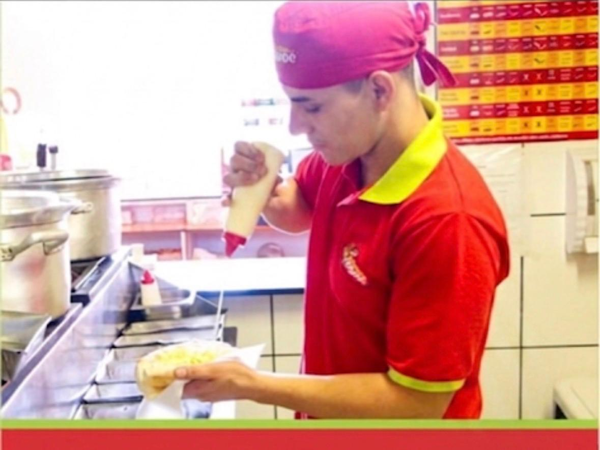
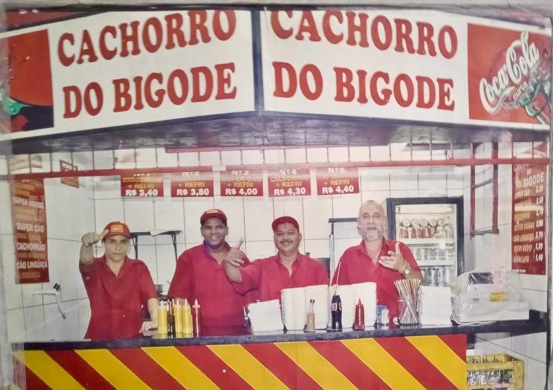
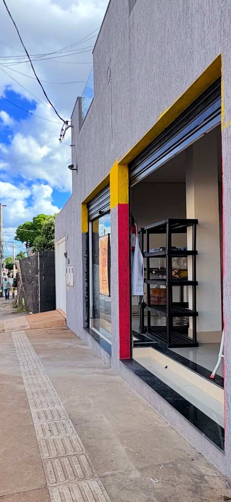
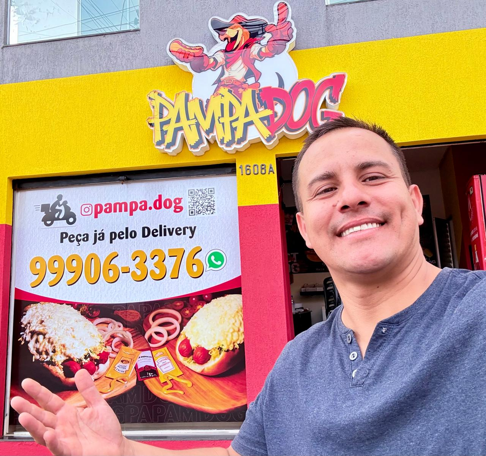

Nossa História
Uma lancheria nascida com paixão pelo sabor e compromisso com a qualidade.
Nossa História
Tradição que veio do Sul e conquistou Montes Claros
O Pampa Dog nasceu da experiência, da coragem e da vontade de recomeçar.
Sou Rodrigo, gaúcho de Porto Alegre, e minha trajetória no ramo da alimentação começou no tradicional Cachorro Quente do Bigode, uma das maiores referências do segmento no Rio Grande do Sul. Foram 16 anos de aprendizado, passando pela produção, supervisão e treinamento de equipes, construindo uma base sólida em qualidade, padrão e atendimento ao cliente.
Em 2025, decidi iniciar uma nova fase da vida em Montes Claros. Antes da mudança, compartilhei meus planos e recebi um conselho que jamais esqueci:
"Vai! Você já sabe tudo. Só cuida o paladar do mineiro que é diferente."
Chegando à cidade, encontrei um ponto comercial e comecei uma reforma completa com as próprias mãos. O que inicialmente seria apenas uma operação de tele-entrega rapidamente cresceu graças à confiança dos clientes e da comunidade local.
Mantivemos a essência do tradicional cachorro-quente gaúcho, adaptando sabores e combinações ao gosto mineiro, criando uma experiência única que conquistou Montes Claros.
Hoje, o Pampa Dog atende no salão e por tele-entrega, unindo tradição, qualidade e o verdadeiro sabor de quem decidiu começar do zero para realizar um sonho.
Prazer, eu sou o Pampa Dog.
O Pampa Dog nasceu da experiência, da coragem e da vontade de recomeçar.
Sou Rodrigo, gaúcho de Porto Alegre, e passei 16 anos aprendendo tudo sobre qualidade e atendimento em uma das maiores referências de cachorro-quente do Rio Grande do Sul.
Escolhi Montes Claros para começar uma nova etapa da minha vida. Com muito trabalho e dedicação, transformei um ponto comercial no que hoje é o Pampa Dog.
Mantivemos a essência do tradicional cachorro-quente gaúcho, adaptando sabores e combinações ao gosto mineiro, criando uma experiência única que conquistou a cidade.
Atendemos no salão e por tele-entrega, levando tradição, sabor e qualidade para toda Montes Claros.
Prazer, eu sou o Pampa Dog. 🌭




Por que nos escolher
Cada detalhe pensado para você ter a melhor experiência possível.
Trabalhamos apenas com fornecedores de confiança. Carnes frescas, pães artesanais e molhos feitos na casa.
Porções generosas e apresentação impecável. Na Pampa Dog, você sempre sai satisfeito!
Seu lanche preparado rapidamente, sem sacrificar a qualidade. Porque fome não espera!
Do clássico hot dog ao smash burger, do combo econômico ao Combo Família. Tem para todo mundo!
Qualidade premium com preço acessível. Acreditamos que boa comida deve estar ao alcance de todos.
Peça pelo iFood e receba seus lanches favoritos no conforto de casa, quentinhos e perfeitos.
Nossa Essência
Oferecer lanches de qualidade com sabor autêntico, atendimento rápido e preço justo, transformando cada refeição numa experiência prazerosa.
Ser a lancheria de referência da região, reconhecida pela excelência, pelo carinho no atendimento e pelo sabor que cria memórias afetivas.
Amamos o que fazemos. Cada lanche é preparado com dedicação genuína, porque acreditamos que comida feita com amor tem um sabor diferente.
Não abrimos mão da qualidade. Ingredientes frescos, receitas testadas e padrão alto de higiene em cada etapa do preparo.
Respeito ao cliente, à equipe e à comunidade. Tratamos cada pessoa como família, porque é isso que somos: uma família.
Comprometidos com práticas sustentáveis, embalagens responsáveis e o bem-estar de nossa comunidade local.
Venha nos conhecer, peça pelo iFood ou fale com a gente pelo WhatsApp. Estamos prontos para te receber!